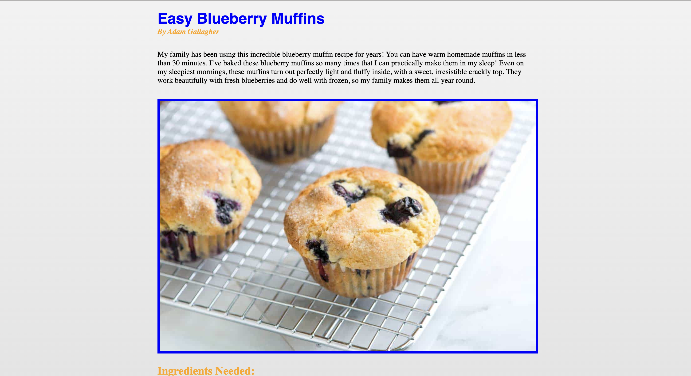
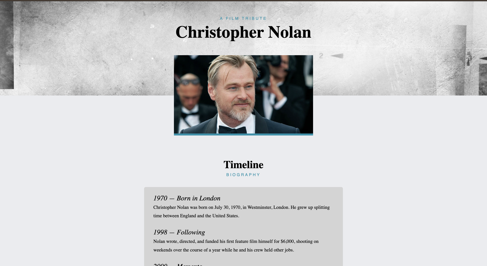
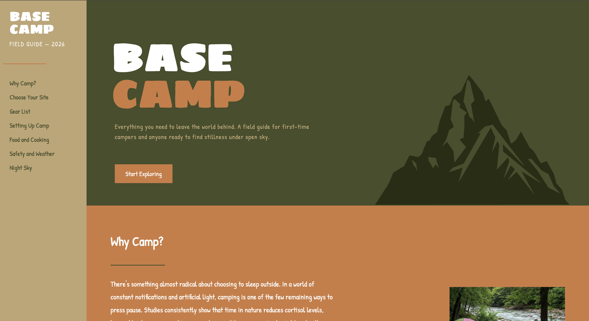
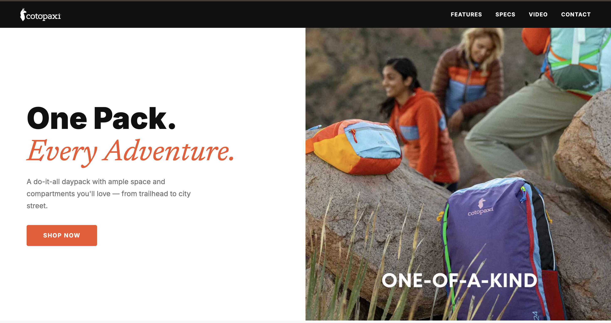

The Recipe
A clean, appetizing recipe page for classic blueberry muffins.
View Project →Portfolio · DESN368 · EWU · Spring 2026
Visual Communication Designer

A clean, appetizing recipe page for classic blueberry muffins.
View Project →
A cinematic tribute to filmmaker Christopher Nolan.
View Project →
A practical field guide to camping essentials.
View Project →
A landing page for Cotopaxi's Del Día packs and their color-blocked design.
View Project →I'm a student at Eastern Washington University who's always been into creative media, especially design, film, and editing. Lately I've gotten into building for the web too, so I can actually make the things I picture in my head instead of just designing them. Down the road, I want to use my media and design skills for church media. Learning to build for the web has made me think a lot about how design can actually serve people, which is part of why church media matters to me.
Say hello — macybrown919@gmail.com